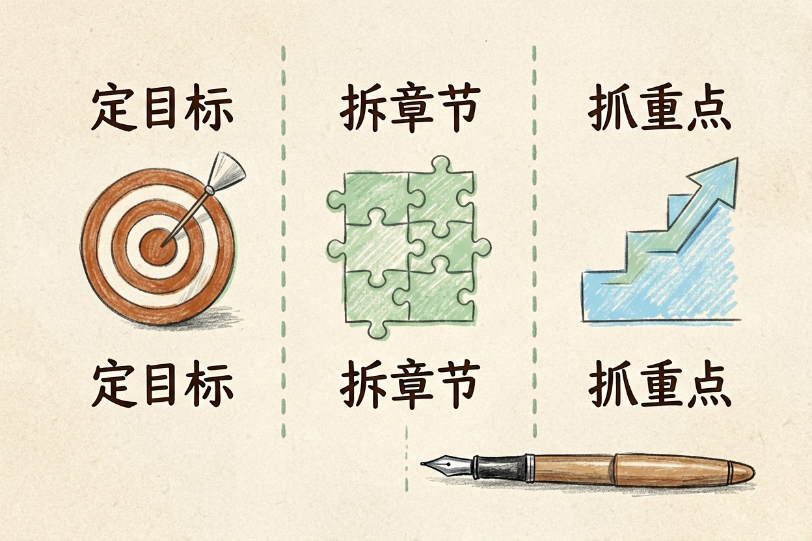
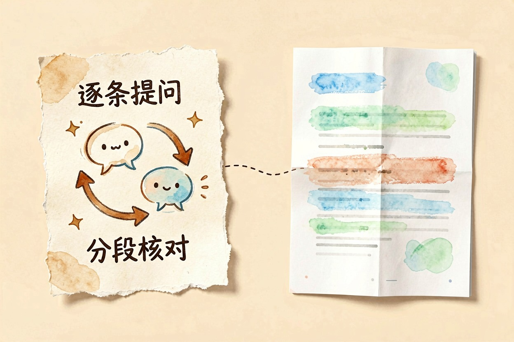
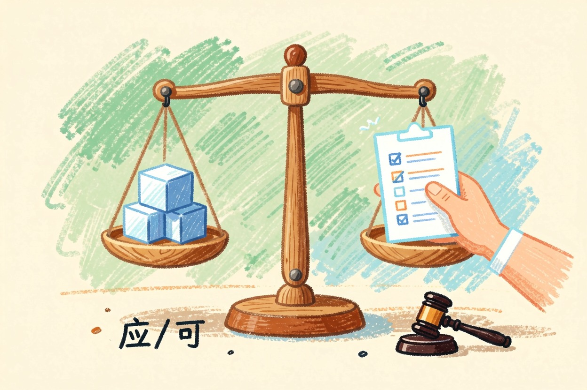

用 AI 读懂合同条款？找出风险点的问法 — Learntide
合同读不完、风险看不出，是很多人的痛点。用 AI 分段提问，能帮你把隐藏的不利条款一条条揪出来。
用 AI 审合同前先定核查目标

用 AI 审合同，先别急着丢进去就问"有没有问题"。这种问法太宽，它只会回一堆正确的废话。你要先想清楚，今天要查哪一类风险。
是查付款节点，还是查违约责任？是查知识产权归属，还是查终止条件？目标越清楚，它答得越准。
把合同按条款拆开，一次盯一条。这样它不容易漏，你也好核对。
如果你手上是长合同，先让 AI 出一页目录。看清总共有几章几节，再决定从哪查起。长合同别想一次审完。分章节推进，每天清一块，质量更高。风险分高低，先查高风险的钱和责。别平均用力，重点才看得清。
适合让 AI 先扫一遍的条款

违约责任最该先扫。它通常会列清谁赔多少、怎么赔。让 AI 把金额和触发条件摘出来，你一眼能看明白。
保密条款也适合。范围、期限、例外，AI 能帮你列成清单。你只要看有没有遗漏。
知识产权条款同样该扫。归属给谁、能不能再许可，AI 能标出来。这类条款金额看不见，但后患大。生效条件也该扫。什么情况下合同才生效，AI 能帮你点出来。通知条款也别放过。违约怎么通知对方，漏了会很被动。
但有些条款它看不深。比如"尽合理努力"这种弹性表述，AI 分不出轻重。这种得靠你判断。
让 AI 找出风险点的问法

不要只问"有风险吗"。换成分项提问，效果更好。下面这段可直接用。
请扮演法务审阅助手，逐条审查以下合同。
对每一条，请指出：
1. 对我方不利的措辞
2. 模糊、可能被对方解释的空间
3. 缺失但应当补充的条款
请引用原文，并给出修改建议。贴一段问一段。每问完一条，你顺着它的引用回原文核对。一次只贴一条，别整篇丢进去。整篇它容易泛泛而谈，没用。
如果它说"无风险"，别信。让它列出这一条里所有名词定义，你再看范围有没有被悄悄放大。
用 AI 审合同容易漏的地方
它容易顺着原文走。原文写"双方友好协商"，它就夸你写得好。其实这句话可能让你丧失主动权。
它也看不出立场偏差。合同整体偏向对方时，单条看都合理，合起来才显出问题。这要你通读才发现。它还爱顺着你的问题答。你问得偏，它就往偏里说，要警觉。
还有管辖和争议解决。AI 常当作普通条款带过。真出事，这一条最要命。
它也分不清"应"和"可"。这两个字法律效力差很多。你让它专门比一遍，才看得清。它对"重大"这类词没概念。什么算重大违约，它给不出准话。
机器给的结论要人来验证
AI 标出的风险，你要回原文一句句对。它标错的地方，不少见。
涉及金额、期限、责任的条款，务必自己算一遍。不确定的条款，截图发给懂行的人看。AI 之外再有一道闸，更稳。让 AI 出一份风险清单汇总，你再逐条打优先级，方便汇报。别把 ai审合同 当作终审，落地的判断仍要专业人把关。 !尾图核心要点回顾
{kind=link}
本文信息核对于 2026-08-08。AI 产品的价格、免费额度与功能变动频繁，实际以各工具官网当前说明为准。